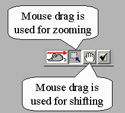

Zooming and panning the map
The system provides a number of facilities for zooming and panning
1) Buttons "Zoom in", "Zoom out" and "Fit the map to the window"
These are iconic buttons located in the tool bar of a map window

2) Arrows around the map
The arrows around the map area are sensitive to mouse clicking and can
be used to shift the map without changing its scale
3) Zooming and shifting through mouse drag
In the toolbar of a map window there is a switch for setting of the interpretation
of mouse dragging.

Depending on the state of the switch (which of the "buttons" is down),
dragging of the mouse in the map area, i.e. movement with keeping the left
mouse button pressed, is interpreted differently. The two figures below
explain how to zoom in and to shift using mouse dragging.